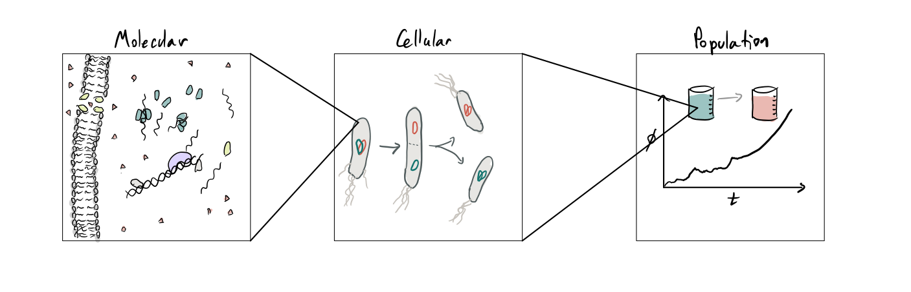

Coarse graining evolutionary dynamics models
Ethan Levien
Selection acts on phsiological traits?
The central challange in evolution is to connect processes across a range of spatial and temporal scales: evolution plays out at population level but is constrained by microscopic interactions
Part 1: The population scale


Let us begin by introducing evolutionary dynamics models without reference to the single-cell scale.
To keep the discussion biologically grounded, we will imagine evolution playing out in a continous culture.
Evolution in the turbidostat
The basic dynamics in a continous culture can be understood from the ODE model for the number of cells of each genotype $n_i$: \[ \frac{dn_i}{dt} = \underbrace{\rho_i(c)n_i}_{\text{growth}} - \underbrace{Dn_i}_{\text{dilution}} \]
The growth rates depend on a limiting nutient: \[ \frac{dc}{dt} = \underbrace{Dc_0}_{\text{media in}}- \underbrace{Dc}_{\text{dilution}} - \underbrace{\gamma^{-1}\left[\sum_i\rho_i(c)n_i\right]c}_{\text{nurtient update}} \]
In the turbidostat the dilution rate $D$ is adjusted to fix the total population size $N = \sum_i n_i$, which means \[ \begin{equation} D = \rho_i(c)n_i \implies c \to \frac{\gamma c_0}{\gamma+1} \end{equation}\]
We obtain the so-called replicator equations for the genotype fractions $\phi_i = n_i/N$: \[ \frac{d\phi_i}{dt} = \phi_i\left(\alpha_i - D - \sum_j \phi_j(\rho_j-D)\right) \]
In general, dynamics are difficult to solve, but with two species these become logistic growth: \[ \frac{d\phi}{dt} = (\rho_1 - \rho_2)\phi(1-\phi) \]
Evolution in the Moran model
These equations work well when $\phi$ is not too small, but new mutations emerge in single-cells, so $\phi(0) = 1/N$.
Model must include fluctuations! This demands we make assumptions about single-cell dynamics
Standard approach (Moran process):
- Take cell division to be a Poission process; that is, time between cell divisions is exponentially distributed at a rate detemined by the genotypes growth rate: \[ p_i(\tau) = \rho_ie^{-\rho_i\tau} \]
- Every time a cell divides another cell is expelled from the culture in order to keep $N$ fixed.
Evolution in the Moran model
This means that over a small time interval $\Delta t$, the number of mutants gained and lost are both given by Poisson distributions: \[\begin{aligned}\text{# of mutants gained} &\sim {\rm Poission}(N\rho_1\phi(1-\phi) \Delta t)\\ \text{# of mutants lost} &\sim {\rm Poission}(N\rho_2\phi(1-\phi) \Delta t) \end{aligned}\]
We can calculate the mean and variance of $\Delta \phi$: \[\begin{aligned}\langle \Delta \phi \rangle &= (\rho_1 - \rho_2)\phi(1-\phi)\Delta t\\ {\rm var} \left(\Delta \phi \right) &= \frac{(\rho_1 + \rho_2)}{N}\phi(1-\phi)\Delta t \end{aligned}\] For simplicty we set $\rho_r = 1$ and $\rho_1 = 1+s$
Corresponds to SDE \[ \frac{d}{dt}\phi = \underbrace{s\phi(1-\phi)}_{\text{selection}} + \underbrace{\sqrt{\frac{\phi(1-\phi)}{N}}\xi}_{\text{drift}} \]
or the Fokker-Plank equation \[ \frac{\partial}{\partial}p(\phi,t) = -\frac{\partial}{\partial \phi}[s\phi(1-\phi)p(\phi,t)] + \frac{\partial^2}{\partial \phi^2}\left[\frac{\phi(1-\phi)}{N}p(\phi,t) \right] \]
Properties of the Moran model
Some trajectories starting on $\phi(0) = 1/N$

The behavoir spends stronly on whether selection or drifts dominates. When does the transition occur?
Evolution in the Moran model
We know it must be when $\phi$ is small, so we make the approximation \[ \frac{d\phi}{dt} =s\phi(1-\phi) + \sqrt{\frac{\phi(1-\phi)}{N}} \approx s\phi + \sqrt{\phi/N}\xi \]
Implies the PDE \[ \frac{\partial}{\partial}p(\phi,t) = -\frac{\partial}{\partial \phi}[s\phi p(\phi,t)] + \frac{\partial^2}{\partial \phi^2}\left[\frac{\phi}{N}p(\phi,t) \right] \]
We can use this to calculate the mean and variance \[ \begin{aligned} \langle \phi \rangle &= \phi(0)e^{st}\\ \langle \phi^2 \rangle &= \left[\phi (0) e^{s t} \left(e^{s t} (N s \phi (0)+1)-1\right) \right]/(N s)\\ \end{aligned} \]
The coefficient of variation \[ CV = \frac{{\rm std}(\phi)}{\langle \phi\rangle} =\frac{1-e^{-st}}{Ns\phi_0} \to \frac{1}{Ns \phi_0} \]
$1/Ns$ is called the Drift barrier
Evolution in the Moran model
So what is the chance the mutant lineage reaches the drift barrier before going extinct?
Below the drift barrier, we can approximate the dynamics over a small time $\delta$ by \[ \Delta \phi = \phi(t+\delta)-\phi(t) = \sqrt{\frac{\delta\phi(t)}{N}}Z,\quad Z \sim {\rm Normal}(0,1) \] This will approximation will give us an order-of-magnitude estimate of $\Delta \phi$ before some time $\delta^*$ when $\delta^* = \phi(t)N$.
At $\delta_1$, the mutant fraction will have changed by $\pm \phi(t)$.This means the population has roughly an equal chance of doubling or going extinct over a time period $\delta_1$.
After $\delta_1$ we can repeat the approximation and after $k$ iterations a time $t_k$ has elapsed where \[ t_k = t_{k-1} + \phi(t_{k-1})N = \sum_j 2^{j} \sim 2^k \implies k = \ln(t)/\ln(2) \]
Evolution in the Moran model
So what is the chance the mutant lineage reaches the drift barrier before going extinct?
Plugging $k = \ln(t)/\ln(2)$ we are obtain order-of-magnitude estimates of the mutant size and chance of survival: \[ \phi(t) = \left\{ \begin{array}{cl} t/N & \text{with prob. $1/t$}\\ 0 & \text{with prob. $1-1/t$}\end{array}\right. \] So the population will reach a fraction $1/Ns = t/N$ after a time $t = 1/s$. The chance the survive until this time is $\sim s$.
Evolution in the Moran model
How fast do mutations accumulate?
In general, very complicated problem because we need to consider competition between >2 mutants and the theory above breaks down.
When can we neglect competition between mutant lineages?
When time for established mutant to sweep through the population is much less than time for new mutation to become established. Letting $\mu$ be the mutation rate: \[\tau_{\rm sw} = 1/s\ln (Ns) \ll \tau_{\rm est} = 1/N\mu s \implies N\mu \ln Ns \ll 1 \]
In this regime, fixations a Poisson process with rate $1/\tau_{\rm est} = N\mu s$, implying \[\rho \sim t N\mu s \]
Part 2: From single-cell to population scale
Motivation from single-cell data
Wang et al. Current Biology (2010)
The basic picture of single-cell growth: cells accumulate mass exponentially at a (random) rate $\lambda$ between cell divisions, then divide in two after a (random) time $\tau$ \[s_{b,k} = \frac{1}{2}s_{b,k-1}e^{\lambda\tau} \implies \ln s_{b,k} = \lambda \tau -\ln(2) + \ln s_{b,k-1}\] Generation time must be coupled to initial cell-size and growth rate in order to mantain a stable distribution of cell-sizes
This leads to a distribution $f(\tau)$ which characterizes the statistics of cell generation times in terms of the phenotypes $\lambda$ and $s$. The biochemical mechanism by which cell's regulate their cell-cycle progression and growth rates therefore affect the distribution of generation times. We need to understand how evolution shapes this distribution in order to explain the observed regulatory mechansims.
From single-cell to population scale
Before we connect single-cell dynamics to evolution, let's first connect to population growth.
Alfred Lotka (1934), Bellman and Harris (1948) and Powell (1956): Each cell's generation time is drawn independently from a distribution $f(\tau)$.
In the long-term, ${\mathbb E}[N(t)] = Ae^{\Lambda t}$ for some $\Lambda$.
How does the rate at which the population grows depend on the distribution of generation times?
Branching process model
The root cell has two daughters with progenies that grow exponentially at the same rate $\Lambda$.
Let $\tau$ be the first cell's generation time:
Writing the population size at time $t$ in terms of the size of both daughter progenies gives the so-called Euler-Lotka Formula
Generalized Euler-Lotka Formula
The Euler-Lotka formula has an elagent generalization to the case where cell's generation times are correlated with their ancestors (Lebowitz et al., 1974): where $\color{rgb(20, 116, 111)}{f_{\rm tree}(\tau)}$ is the distribution of generation times taken over all cells throughout the history of an exponentially growing population.
In general $\color{rgb(20, 116, 111)}{f_{\rm tree}(\tau)} \ne \color{rgb(205, 88, 73)}{f(\tau)}$
Branching process model
What about a finite population?
In this case we can't use the self-similarity trick, but if population is large we expect \[\frac{d}{dt}\phi = (\rho_m-\rho_r)\phi(1-\phi)\quad\quad{\rm with}\quad\quad \frac{1}{2} = \int_0^{\infty}f_i(\tau)d\tau, \quad i \in \{m,r\}\]
Same question as before: how do we add noise to this?
We want to understand how the stochastic dynamics of birth and death at the single-cell level propogate to population level, but in this case cells do not divide at a constant rate, therefore the stochastic events which change $\phi$ will depend not just on the number of mutant cells, but also their phenotypes.
If $f_i(\tau)$ is the distribution of single-cell generation times conditioned on the growth rate and cell-size, the per unit time probability for the cell to divide is \[ \gamma_i(a) = \frac{f_i(a)}{1- \int_0^a\,da'\, f_i(a')} \] Note special case: $f_i = \rho_ie^{\rho_i\tau}\implies \gamma_i = \rho_i$.
We then get a hyperbolic PDE for $Q$:\[ \frac{d}{dt} Q({\bf u},{\bf a},t) + \sum_{k=1}^N \frac{\partial}{\partial a_k} Q({\bf u},{\bf a},t) = - Q({\bf u},{\bf a},t)\left(D+ \sum_{k=1}^N \gamma_{u_k}(a_k)\right) \] along with the boundary conditions \[ Q(S_{k,u_v}({\bf u}),S_{k,0}(S_{v,0}({\bf a})),t)= \frac{1}{N} \gamma_{u_v}(a_v)Q({\bf u},{\bf a},t)\]
Bridging-scales
We don't really care about $Q$ though! we are interested in the behavoir of the mutant fraction $\phi$.
Question: can we coarse-grain to get an effective SDE?
Just like before, we can try deriving an SDE: \[\begin{aligned}\text{# of mutants gained} &\sim {\rm Poission}\left(N\langle\gamma_m(a_j) \rangle\phi(1-\phi) \Delta t\right)\\ \text{# of mutants lost} &\sim {\rm Poission}\left(N\langle\gamma_r(a_j) \rangle\phi(1-\phi) \Delta t\right) \end{aligned}\]
We might guess that we can make the approximation $\langle\gamma_i(a_j,\lambda_j,s_j) \rangle \approx \rho_i$. This obviously isn't going to work when $N\phi$ is very small, but perhaps if the drift barrier $1/s$ is not too small we can capture the dynamics with the SDE: \[ \frac{d}{dt}\phi = (\rho_m-\rho_r)\phi(1-\phi) + \sqrt{(\rho_r + \rho_m)\frac{\phi(1-\phi)}{N}}\xi \] All the classical results about fixation and neutral drift then follow.
Results: Neutral dynamics
Let's start by considering the neutral case ($s=0$). In the classical Moran model, we expect that \[ {\rm var}(\phi) \approx \frac{t}{N} \]
Ratio is $O(N)$! Even in large populations the time dependence of division rates matters. What's going on?
Results: Neutral dynamics
We can get some idea by looking at the limiting case ${\rm CV} \approx 0$.
To get from the currect cells in the population, we have to go back $O(N)$ generations.

Results: benificial mutations
Now let's consider the fate of a benificial mutation occuring in one cell. Can we use the argument from before but with the drift barrier at $N_{\rm eff} = 2\rho/3\ln(2)N$? Actually not! It's not just about the drift barrier, but the out-of-steady-state dynamics of the initial mutant clone.
Let $p_{\rm ext}$ be the exitinctin probability and $q$ be the chance that a cell is expelled before it divides. Then \[ p_{\rm ext} = q +(1-q)p_{\rm ext} ^2. \] where \[q = \rho_r\int_0^{\infty}\int_0^{\tau_d}f_m(\tau_d)e^{-\rho_r \tau_e}d\tau_e d\tau_d = 1 - \tilde{f}_m(\rho_r)\] $\tilde{f}_m(\rho_r) = \int_0^{\infty}f_m(\tau)e^{-\rho_r\tau}d\tau$ is the Laplace transform of $f_m$ evaluated at $\rho_r$.
Results: benificial mutations
Example : Let's assume the distribution of generation times is a gamma distribution.
We can show that \[ p_{\rm fix} = \frac{2}{{\rm CV}_{\tau}^2}\left(1-2^{-{\rm CV}_{\tau}^2} \right)s + O(s^2).\]

Notice that as ${\rm CV}\to 0$, we obtain $p_{\rm fix} 2\ln(2)s \ne N/N_{\rm eff}s$.
We cannot capature the dynamics by rescaling Moran SDE -- connection between genetic drift and fixation breaks down.
Results: long-term evolution
Do small effects on fixation probability matter in the long-term?
The average of $\rho$ over many trajectories obeys \[ \frac{d}{dt}\langle \rho \rangle= \mu N \rho \delta \langle \rho p_{\rm fix} \rangle. \]
The Euler-Lotka equation
We have derived the the Euler-Lotka equation.
If all cells live for exactly a time $\tau$, then $N(t) = 2^{t/\tau}$, so the rate of exponential growth is
Jensen's inequality tells us
If we fix the average generation time then variability will increase the rate of growth.
Motivation from single-cell data

Eldar and Elowitz, Nature (2010)